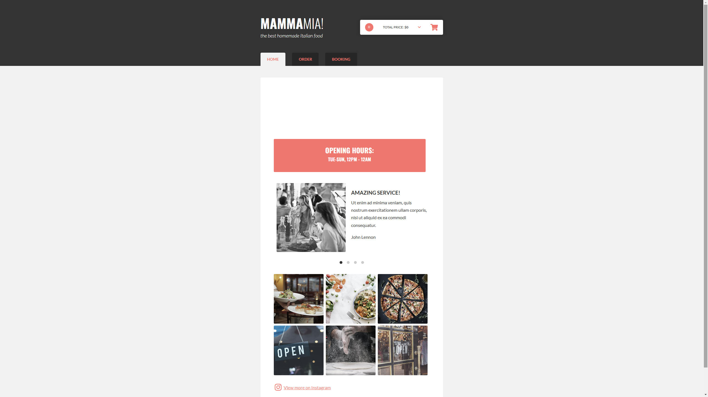
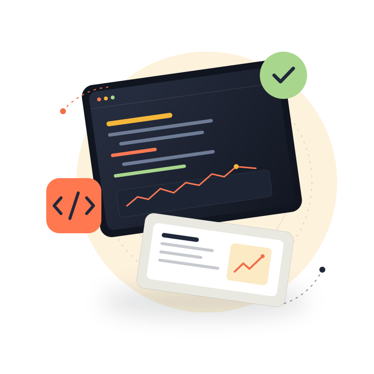
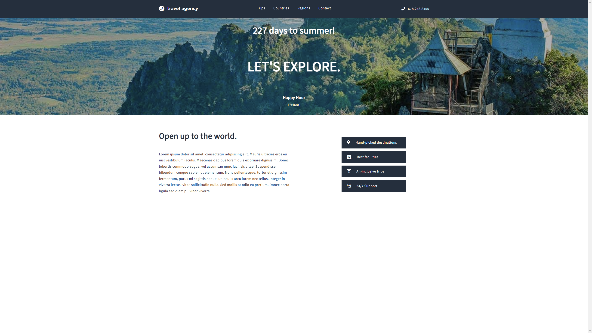
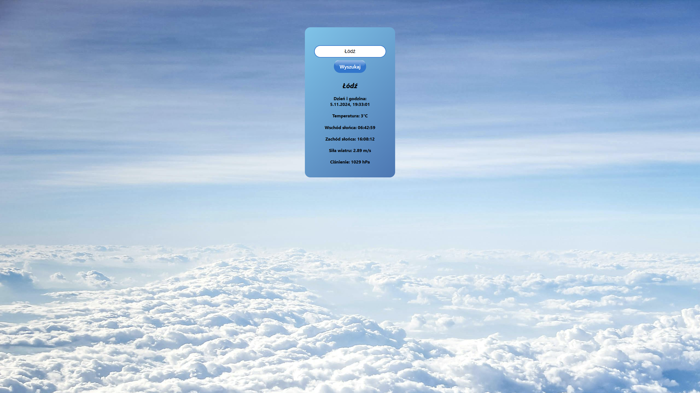
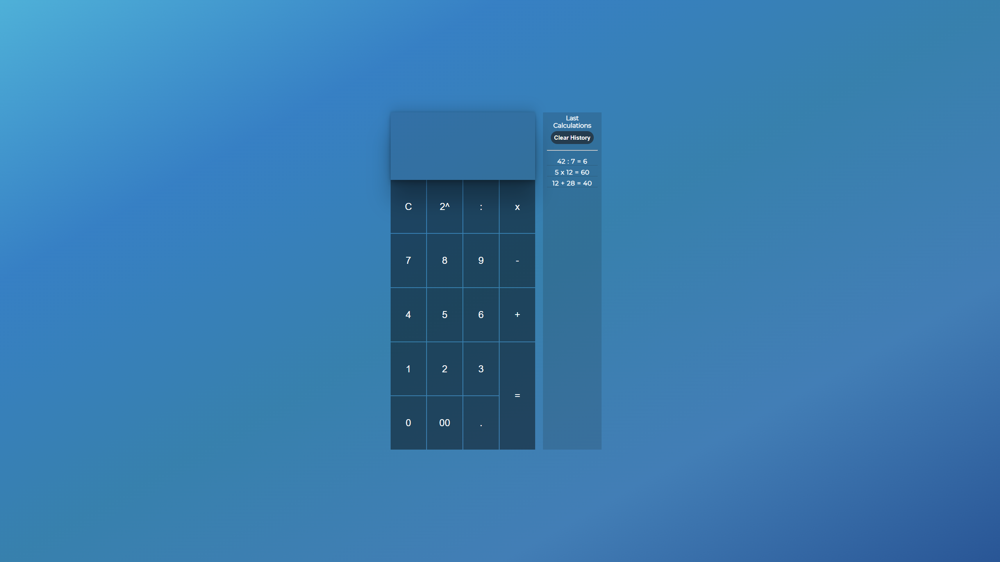
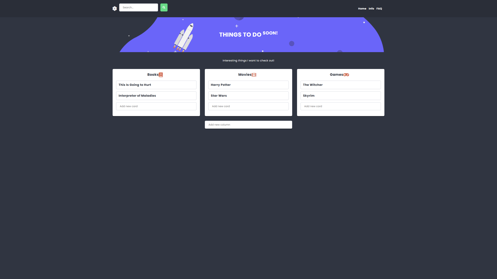
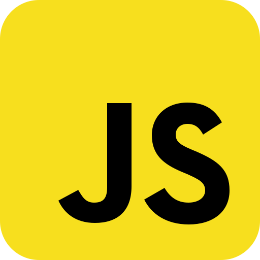
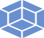

VIEW PROJECT ↗01 — WEB APPORDERING EXPERIENCE
Project Pizzeria
↗A restaurant experience with an interactive cart, configurable orders and table booking — a simplified front-end build.
JavaScriptHTMLSass
Ideas into interfaces.
Hi, I’m Szymon — a developer who enjoys turning ideas into practical digital experiences, one thoughtful detail at a time.

01 / THE THINGS I’VE MADE
A collection of experiments, side projects and small ideas brought to life. Pick one and take a closer look.

VIEW PROJECT ↗A restaurant experience with an interactive cart, configurable orders and table booking — a simplified front-end build.

VIEW PROJECT ↗A trip booking interface with optional extras, guest selection and a playful countdown to summer.

VIEW PROJECT ↗Weather details for cities around the world, including temperature, sunrise, sunset, wind and pressure.

VIEW PROJECT ↗A straightforward calculator with a calculation history and controls to manage previous operations.

VIEW PROJECT ↗A small app for creating personal collections of favourite books, movies, games and more.
02 / A LITTLE CONTEXT
SW—2026I like figuring out how things work — then finding a way to make them work better.
My journey into programming began with web development. I enjoy the mix of logical problem-solving, useful functionality and visual detail that goes into making a digital product feel right.
This portfolio is a snapshot of that process: projects built to practise, experiment and keep learning. It’s a work in progress, just like the person behind it.
Follow the journey on GitHub ↗03 / CURRENT TOOLKIT

JavaScript01
Webpack03